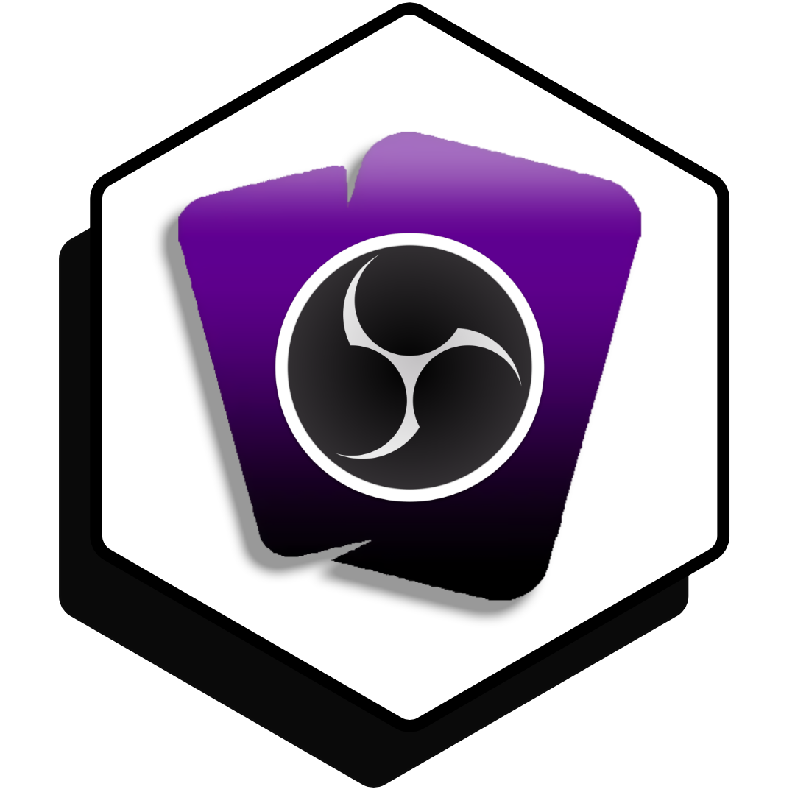

LootsToolsEX for OBS
(This is a feature unlocked with Loot's Tools Plus. A Plus Account is required.)

LootsToolsEX for OBS is an EXtension which allows controlling OBS with Loot's Tools.
It makes possible things like changing scenes, changing the text of a Text Source, changing Source Settings , muting Sources and toggle Recording and Streaming.
Setup
You need to have installed OBS Websocketon your OBS. You can download it here
Commands
(Note: the name between parenthesis is the function's name, used for calling them with Advanced Cards' Scripts)
OBSCHANGESCENE (obsChangeScene)
This command changes the active Scene on OBS.
Usage
OBSCHANGESCENE {scene}
Arguments
- scene [str]: The scene you want to change to.
OBSCHANGETEXT (obsChangeText)
This command changes the text of a Text Scene on OBS.
Usage
OBSCHANGETEXT {source} {text}
Arguments
- source [str]: The Text Source you want to change the text from.
- text [str]: The text you want to be changed to.
OBSCHANGESETTINGS (obsChangeSettings)
This command changes the Settings of a Source on OBS.
Usage
OBSCHANGESETTINGS {source} {configChanged} {config}
Arguments
- source [str]: The Source you want to change the setting of.
- configChanged [str]: The Setting you want to change.
- config [str]: The value you want the Setting to be.
OBSMUTE (obsMute)
This command mutes a Source on OBS.
Usage
OBSMUTE {source} {option}
Arguments
- source [str]: The name of the Source to mute/unmute.
- option [str] (Optional):
muteorunmute. If not specified, it toggles the mute.
OBSSTREAMING (obsStreaming)
This command toggles Streaming on OBS.
Usage
OBSSTREAMING {option}
Arguments
- option [str]: Possible values:
start,stoportoggle.
OBSRECORDING (obsRecording)
This command toggles Recording on OBS.
Usage
OBSRECORDING {option}
Arguments
- option [str]: Possible values:
start,stop,toggle,pauseorresume.